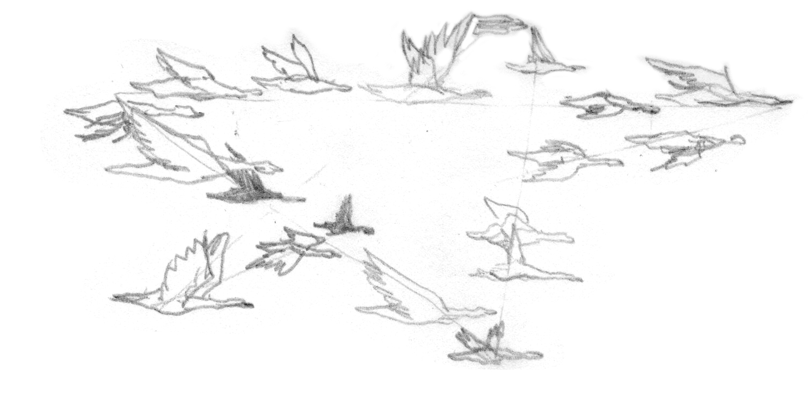
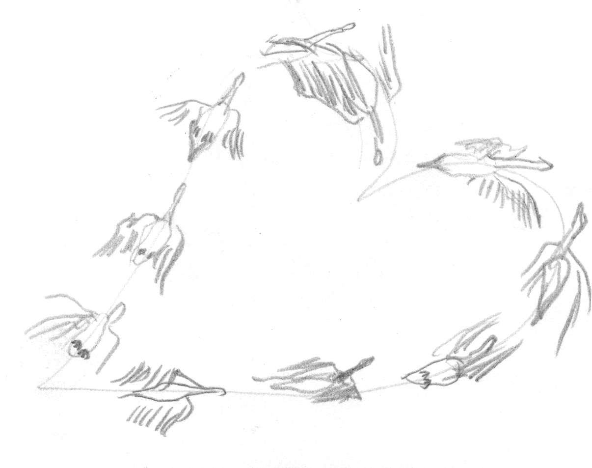

There once was a Dancer so beautiful that everyone knew her name. Her grace spoke multitudes, and her art was far more marvelous than her looks. She moved her body so celestially, that the dead might have risen for the privilege of a glance. Not only was she an artist beyond her time, she was one of the most beloved members of the community, and was very much active in preserving the well being of greater society. It was not uncommon to have fallen under her charm, which is what The Student had the pleasure and pain of doing.
The Student was a young adult studying dance. Ever since she was a small girl, she was deeply inspired by The Dancer. All over her room were images of The Dancer pasted on the walls. In some images The Dancer would be gliding through the air, while in others she would be silently gazing at the viewer. For years, these images remained untouched. The Dancer watched the girl as she matured physically, and as she got older, The Dancer watched her as she matured sensually. The edges of the photos slowly peeled away from the walls, almost as if The Dancer were escaping the wall she was mounted on for years to embrace the girl during darkness.
One day, years later, The Student met The Dancer by chance outside a movie theater after a midnight screening. The Dancer was alone, leaning against a wall, looking into the distance and occasionally at her watch, perhaps waiting for a friend. The Student was astonished and felt as though her heart was about to explode. After years of admiration and lust, she thought that she knew The Dancer's every hill and divot. Seeing her in real life, however, everything that The Student thought she understood about her felt foreign. She nervously approached The Dancer and begged with everything in her soul to be taken under her wing. The Dancer, shocked and flustered, hushed The Student's rapidly rambling mouth and accepted the proposal, skeptically lured by her charming innocence and lovely appearance.
To her, The Dancer was everything. The two would practice every evening, sometimes until dawn. This level of devotion cost The Student many close friends. Her life belonged solely to The Dancer. The two spent so much time together, and some mornings The Student would surprisingly (and happily) discover herself sleeping next to The Dancer in bed, though she could intimately recall everything that occurred the night before. The Student felt that she had manifested her greatest cravings. Everything was perfect, no matter how much pressure she put her body through. Because of how long and how excessively they danced, the passage of time didn't seem to exist.
At times when The Student would fumble a move during practice, The Dancer advised her helpfully; yet, other times, she scolded her viciously. No one could predict what type of day it would be. During a particularly strenuous and mistake-ridden session, The Dancer harshly told The Student to lose weight, as practice alone did not seem to be adequate. Taking everything The Dancer said as higher than gospel truth, The Student lived on fruits, vegetables, and the occasional grain. Abiding loyally to this diet, she became remarkably thin and weak. She no longer felt like her impassioned self, and her interest in dance shrank. According to The Dancer, The Student seemed to be performing better than usual and received high praise. She was torn and could not comprehend how the woman she admired most and thought she loved had driven her to this ruined state. One morning, feeling particularly ill, as she stood up to leave her bed, she felt an immense rush to her head and fell face forward to the floor.
Some time later, she woke up surrounded by grass. Despite being groggy, she knew that she was not in a grass field when she lost consciousness. Disoriented, she stood up and decided to survey her surroundings. However, as she was walking, she noticed her body was moving strangely. She looked down at her feet and realized that she was in fact walking with webbed claws! She quickly waddled to the edge of the pond. Peering into the water, she was aghast at her appearance. It was not a young, beautiful woman looking up at her, but a beady, awkward goose! Shocked, she looked around to find any clue to this bizarre transformation and saw pedestrians walking their dogs, people enjoying picnics, and geese feeding by a pond. She approached people frantically, screaming for help, though they all seemed to recoil and cringe their faces. Her new image shook her so much that she staggered and could not help but feel lightheaded once more, falling to the grassy ground.
She awoke, staring up at four, maybe six geese looking down upon her. She must have looked terribly distressed, so the geese began to console her. They communicated to her that they would not hurt her, and though they did not know where she came from, they would allow her to join their flock. They led her to the east side of the pond, their favorite part, and encouraged her to graze with them. Unfamiliar with this method of eating, She observed the geese grazing on the grass. Wanting to fit in, she pecked away at every lush spot she could find. The geese did not notice anything unusual about her. As the others finished grazing and hopped into the pond, she still found herself terribly hungry. She continued to feast on the grass for hours, which was no longer satisfying to her tongue. As she was feeding, something shiny caught her eye- a trashcan! She quickly waddled over to it and jumped in, devouring every edible thing she could find. When that trash can was emptied, she found another one to invade. By the end of the day, she consumed at least four trashcans of scraps. She was still hungry. Since it was getting late, the other geese encouraged her to go to bed.
The next morning, her hunger pains were more severe than the day prior. She cleared the remaining trashcans in the park, and not surprisingly, yearned for more. It must have been a holiday, as she saw more picnickers than usual enjoying the sun and their packed lunches. Without any hesitation, she sneakily approached a group of picnickers, and with her beak opened the lid of their basket and used her long neck to reach for a stack of fluffy sandwiches. When one of the picnickers noticed the theft and yelled, she swiftly fled the scene. She enjoyed the fruits of her success, and continued to steal from those enjoying their lunches. Eventually, word spread around town about a rabid, bandit goose that disrupted park harmony, and the community deemed it necessary to get rid of it.
Some time later, she and the rest of the geese were enjoying a typical graze under the sun, when suddenly, a large group of people began uniformly marching towards them. The birds were not immediately alarmed, though they were cautious. All the geese were frightened, though she was particularly nervous as she had yet to attempt flight. A few bold geese attempted to intimidate the humans, honking and hissing as loudly as they possibly could, though the humans did not seem affected. As the crowd closed in, one by one, the geese took off.
As the people came into her clearer view, she saw that they were holding firearms of some kind. To her dismay, she recognized a familiar face in the gathering. The Dancer was amongst them, equipped with a pistol. Without any hesitation, she ran as fast as her webbed feet would allow, spread out her wings and effortlessly joined the others in the sky. She could not believe that she was able to fly so easily, and wondered if this was the moment for which she had rehearsed so laboriously. The other geese, who did not think she was capable of flight, were surprised by her sudden takeoff.
The geese then sensed the true danger of the situation. All of the remaining geese joined her in the sky. They believed that perhaps she knew something that they were unaware of, and decided to follow her lead. They began aligning in a V formation behind her. She noticed the in-sky shuffling that occurred behind her, and was rather alarmed at it. With her quick-wit, she determined that this method of flight would not be ideal for an escape. Through unpredictable flight, there would be a lesser chance of getting shot. She communicated to her comrades to alternate their flight patterns by forming fluctuating shapes according to her lead. She was worried that the geese would not understand her human concept of shape, though once she began guiding them, to her surprise, they followed her lead seamlessly. She and her cohort flew in stars, hearts, and circles. They flew closer together and then further apart, pulsating across the sky.
 The weaponized humans were not in awe at this spectacular site, and multiple shots were fired. Through her skillful choreography, none of the geese were injured. She looked down at the crowd, and locked eyes with The Dancer. She watched The Dancer, the one she once loved, load her gun, point it to the sky, aim, and fire. She watched the bullet as it dislodged from the barrel, hitting her left wing. She watched as another bullet struck her side. The two bullets, though powerful, did not puncture her body. She felt nothing, and no blood was shed. She and the geese flew forever, striding throughout the heavens.
No one knows what happened to The Student. The Dancer reported her as a missing person after she was absent from practice for a couple days. Her body was never found. The Dancer was mortified by the loss of her lover and apprentice. She never again had the same stride.
Dark Mode!